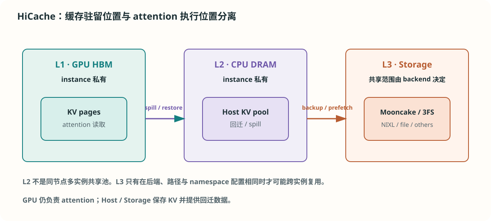
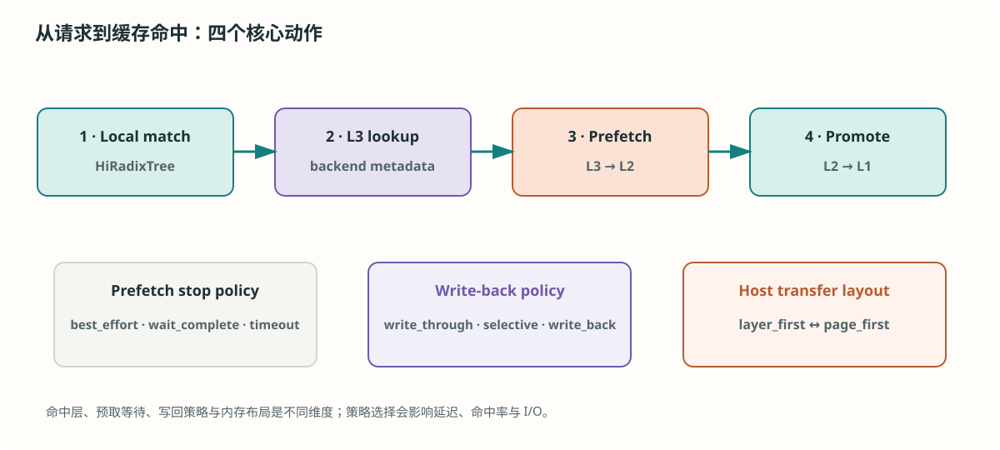

第 13 章 · 分层 KV 缓存
HiCache：从 GPU HBM 到 CPU DRAM 与分布式 KV 存储
理解 HiRadixTree、L1/L2/L3 的共享边界、prefetch stop policy、write-back 与 page-first transfer layout。
RadixCache 复用 GPU 上仍然保留的共享前缀 KV；但 GPU HBM 容量有限，冷前缀可能被驱逐。HiCache 将可复用 KV 扩展到 Host DRAM 和外部 storage：先定位数据所在 tier，再决定回迁、预取、等待或重算。关键是理解每一级的共享范围与搬运成本。
读完本章，你应该能
- 区分 L1 GPU、L2 Host 与 L3 Storage 的作用域
- 解释 HiRadixTree 如何记录多 tier KV 位置
- 比较三种 prefetch stop policy
- 理解 write-back、page-first layout 与传输/计算 overlap。
1. RadixCache 之后，KV 还能放在哪里？
RadixCache 复用的是 GPU 上仍然保留的共享前缀 KV；但 GPU HBM 容量有限，冷前缀可能被驱逐。若驱逐就意味着完全丢弃 KV，后续相同前缀只能重新 Prefill。HiCache 将可复用 KV 的驻留位置扩展到 Host DRAM 与外部 storage，但 attention 仍由 GPU 执行。
2. 三级缓存：先理解谁能共享
HiCache 将 GPU HBM 视为 L1、CPU DRAM 视为 L2、外部存储视为 L3。关键细节：L1 与 L2 都属于单个 inference instance；即使两个实例运行在同一台机器上，也不会自动共享彼此的 L2。

| Tier | 介质 | 范围 | 命中后 |
|---|---|---|---|
| L1 | GPU HBM | 单 instance | 直接用于 attention |
| L2 | Host DRAM | 单 instance 私有 | Host → GPU |
| L3 | Storage backend | 按 backend 配置 | L3 → L2 → L1 |
3. HiRadixTree：节点还记录 KV 位于哪一层
RadixTree 节点表示一段连续 token 对应的 KV。HiRadixTree 进一步记录该段 KV 当前位于 L1、L2 或多个 tier。本地 GPU / Host 数据维护精确位置元数据；L3 数据则在访问时查询 storage backend，而不是持续同步一份全局 L3 元数据。
因此“前缀命中”不等于“GPU 里已经有 KV”。命中结果还需要携带 tier 位置，后续由调度决定等待回迁、部分预取，还是补算缺失后缀。
4. Local match 与 L3 prefetch：命中不等于零等待
请求先遍历本地 HiRadixTree，找到连续的 L1/L2 前缀；未命中部分再查询 L3 元数据并预取到 L2。官方设计文档列出三种 prefetch stop policy：
best_effort：不等待全部预取完成，尽早开始 Prefill。wait_complete：等待预取完成，偏向最大化命中率。timeout：等待到完成或超时，在延迟与命中率间折中。
预取等待越久，可能恢复更多 KV，但也可能推迟当前请求开始计算。未及时到达的数据仍需走可用路径或重新计算。
5. 数据布局：为什么 page-first 对存储 I/O 有帮助？
GPU attention 常按 layer 组织 KV，外部 storage 更适合按 page 组织连续数据。若 Host 完全沿用 layer-first 布局，一个 KV page 可能分散在多个内存区域，备份与恢复会产生许多小块传输。
HiCache 提供 layer-first、page-first 等 Host layout，并在传输时转换布局。官方设计还描述 GPU-assisted I/O、zero-copy storage access，以及 Host→GPU 按 layer 准备 KV 后尽早启动该层计算、同时继续传输后续层 KV 的 overlap。注意 L3→L2 与 L2→GPU 的读取粒度不同。

6. 一个帮助判断的代价模型
缓存命中并非零成本。用简化模型表示：
未命中时则需要额外 Prefill 计算。两者比较时必须考虑回迁等待与可被避免的计算成本；这些公式是教学分解，不是 HiCache 性能预测器。
7. 源码与官方设计文档
- HiCache System Design and Optimization：tier sharing、HiRadixTree、prefetch、write-back 与 layout。
- HiCache usage：参数与配置入口。
- hicache_storage.py：storage abstraction。
- SGLang HiCache engineering blog。
8. 交互：从哪个 tier 命中？
Cache-hit path explorer
L1：KV 已在 GPU HBM，可直接被 attention 使用。
L2：KV 位于当前 instance 的 Host DRAM，需要 Host→GPU 回迁。
L3：先查询 backend，再 L3→L2 预取，最后 L2→L1 回迁；跨实例共享取决于 backend。
Miss：没有可复用的 KV 前缀，需要对缺失部分执行 Prefill。
运行 CPU toy tier lookup，观察 L2 私有与 L3 namespace 共享的差别。
9. 限制、成本与误区
- L2 不会因为两个实例同机就自动共享。
- L3 命中仍有 metadata、storage、网络和回迁成本。
- write_through、selective 与 write_back 对 I/O 和未来命中率的影响不同。
- 缓存身份必须与模型、tokenizer、adapter / namespace 等语义边界相容。
评测应区分 cold/warm cache、各 tier hit ratio、prefetch wait、Host↔GPU / Host↔Storage 吞吐、TTFT、TPOT 和 Host memory 占用。
参考资料与版本边界
- SGLang HiCache System Design。
- SGLang HiCache usage。
- SGLang HiCache engineering blog。
- SGLang paper：RadixAttention 背景。
实现快照：sgl-project/sglang@ac0380c7faf9cece3ca32ffe75815af7c585acea。本章不将特定硬件性能数字泛化为本仓库 benchmark。